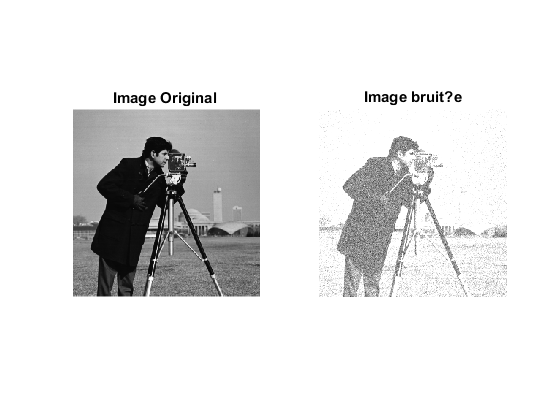
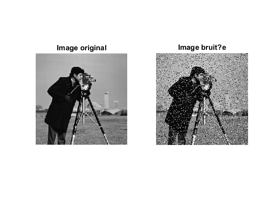
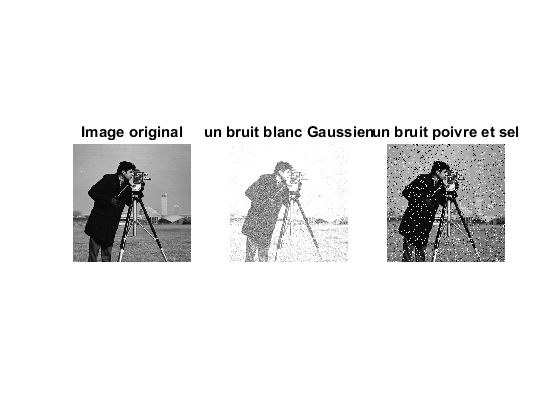
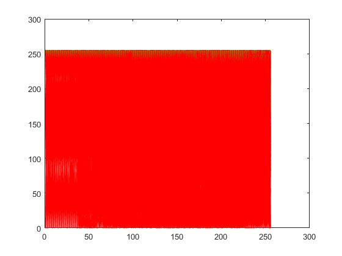
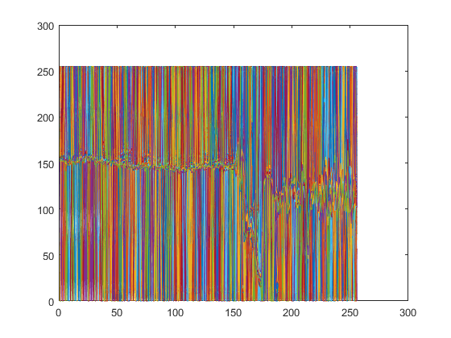

Contents
X1=imread('cameraman.tif');
X2= imnoise(X1,'gaussian',0.5);
subplot(1,2,1); imshow(X1); title('Image Original ');
subplot(1,2,2); imshow(X2); title('Image bruit?e');

Le bruit impulsionnel, n?affecte que certains pixels de l?image (un
X1=imread('cameraman.tif');
X3=imnoise(X1,'salt & pepper',0.1);
subplot(1,2,1); imshow(X1);title('Image original')
subplot(1,2,2);imshow(X3);title('Image bruit?e')

subplot(1,3,1);imshow(X1);title('Image original');
subplot(1,3,2); imshow(X2); title('un bruit blanc Gaussien');
subplot(1,3,3),imshow(X3); title('un bruit poivre et sel');

[N,M]=size(X1)
figure
plot(1:N,X1)
hold on
plot(1:N,X2,'g')
plot(1:N,X3,'r')
figure
plot(1:N,X1,1:N,X2,1:N,X3)
N =
256
M =
256
 